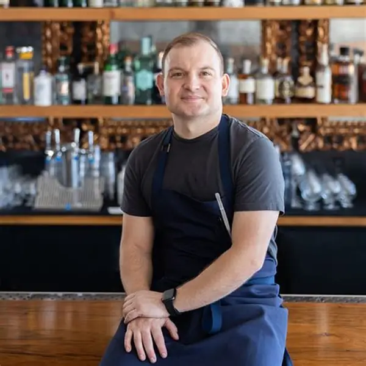

Jacob Rossi - Founder & Head espresso

Jacob brings over 15 years of experience in coffee making and is passionate about delivering the perfect cup every time.
Welcome to Xspresso Caffè, where passion meets coffee. We are dedicated to serving high-quality beverages and creating a warm, welcoming environment for our customers.
Xspresso café was created to make coffee culture accessible to everyday South Africans and focusing on low-cost drinks and pastries (croissants, muffins, donuts and pies) but lastly fast service for people on the go. It became popular for offering affordable, quick coffee and baked goods at a fixed price point of R14 for every item.
We strive to provide fast, friendly service in convenient locations ensuring a nice experience while creating a welcoming environment.
We envision a future where everyone can enjoy high-quality coffee and fresh baked goods at accessible prices to grow the brand while maintaining commitment to affordability, efficiency and customer satisfaction

Jacob brings over 15 years of experience in coffee making and is passionate about delivering the perfect cup every time.
Anica ensures that the café runs smoothly and that every customer has a great experience.
Maria ensures that the café runs smoothly and that every customer has a great experience.